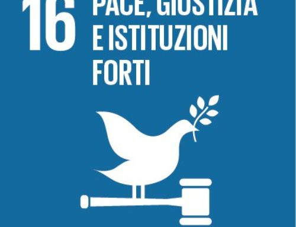

obbiettivo 16

pace giustizia
La percentuale mondiale di persone detenute senza
essere condannate per un
crimine è rimasta pressoché
invariata nell'ultimo decennio: dal 32% nel 2003-2005 al 31% nel 2014-2016.
Contribuire affinché tutti i paesi raggiungano questi Obiettivi
entro il 2030. Gli Obiettivi Globali devono essere presenti nei
piani nazionali, e ogni Stato sceglierà i temi
più urgenti nel proprio
-
· Garantire che ogni Stato impegni proprie risorse per il raggiungi-
mento degli Obiettivi. Inoltre, i paesi sviluppati devono sostenere i
paesi meno sviluppati nel raggiungimento degli Obiettivi.
- · Rispettare le decisioni politiche dei vari paesi, purché siano
coerenti. Per esempio, non si possono creare delle regole per la
protezione delle risorse naturali e, al tempo stesso, permetterne lo
sfruttamento.
- · Impegnarsi con le organizzazioni e gli individui che hanno lavora-
to per molti anni su diversi temi collegati agli Obiettivi Globali.
Queste organizzazioni e queste persone vanno coinvolte per il
raggiungimento degli Obiettivi, la loro esperienza e il loro sostegno
sono necessari.
- · Fare in modo che gli Stati migliorino la gestione di dati e statistiche,
per valutare i propri progressi nel raggiungimento degli Obiettivi
Globali.